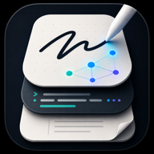

InkLayer
InkLayer 是一款筆記 App，把手寫、PDF 與 Markdown 筆記放在同一張畫布上，存成屬於你自己的檔案。
功能
- 在 PDF 上手寫：用 Apple Pencil 或觸控筆書寫，手寫存在 PDF 旁邊，原始檔案不會被修改。
- Markdown 筆記：筆記之間可以互相連結，有反向連結與關聯圖。
- 圖層：PDF、打字、手寫與圖片各自分開，可以個別顯示、隱藏或匯出。
- 畫布：頁面、卡片、錄音與流程圖並排整理。
- 你的檔案，用你的方式同步：筆記庫就是一般的 Markdown 與 PDF 資料夾。可以放在 iCloud 雲碟、透過你自己的 Google 雲端硬碟同步，或使用你選擇的 WebDAV 伺服器。InkLayer 沒有帳號，也沒有自己的伺服器。
下載 InkLayer
App Store 上的 InkLayer，支援 iPhone、iPad 與 Mac。